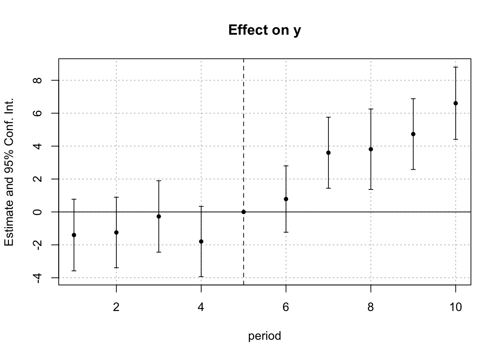

1 面板数据
1.1 一句话Tips
sandwich提供了聚类标准误计算(vcovCL)，包括面板数据的聚类(vcovPL)。PSTR:面板平滑转移模型。MSCMT:多个结果变量的合成控制方法的包。- 检查面板数据是否平衡：使用
table(PanelData[,1:2])或者is.banance。 phtt包，交互效应的面板模型，用的Bai (2009)的估计方法。It offers the possibility of analyzing panel data with large dimensions n and T and can be considered when the unobserved heterogeneity effects are time-varying.
1.2 fixest包
fixest包的优点如下：
- 提供了面板高维固定效应估计。
- 提供了稳健、聚类标准误选项。
- 计算速度快。速度比stata的
reghdfe、Julia的FixedEffectModels都要快。 - 提供了Sun and Abraham（2020）的交错面板估计。
综上，以后固定效应估计，应该使用该包。
四个固定效应的泊松面板回归，|后就是固定效应变量。
library(fixest)
gravity_pois <- fepois(Euros ~ log(dist_km) | Origin + Destination + Product + Year, trade) 而且你可以通过Origin^Destination的写法来表示两个变量间的交互固定效应。比如Origin如有3个水平，Destination有4个水平，这种写法会产生12个固定效应。
可变斜率项，固定效应可以改变斜率，这在控制个体的异质性时间趋势中非常有用。
# Our base data for this section
base <- iris
names(base) <- c("y", paste0("x", 1:3), "fe1")
# Create another "fixed-effect"
base$fe2 <- rep(letters[1:5], 30)
head(base)## y x1 x2 x3 fe1 fe2
## 1 5.1 3.5 1.4 0.2 setosa a
## 2 4.9 3.0 1.4 0.2 setosa b
## 3 4.7 3.2 1.3 0.2 setosa c
## 4 4.6 3.1 1.5 0.2 setosa d
## 5 5.0 3.6 1.4 0.2 setosa e
## 6 5.4 3.9 1.7 0.4 setosa a## OLS estimation, Dep. Var.: y
## Observations: 150
## Fixed-effects: fe1: 3
## Varying slopes: x2 (fe1: 3)
## Standard-errors: Clustered (fe1)
## Estimate Std. Error t value Pr(>|t|)
## x1 0.450006 0.156731 2.8712 0.10292
## ---
## Signif. codes: 0 '***' 0.001 '**' 0.01 '*' 0.05 '.' 0.1 ' ' 1
## RMSE: 0.298706 Adj. R2: 0.863506
## Within R2: 0.178944## Fixed-effects/Slope coefficients
## fe1 x2 (slopes: fe1)
## Number of fixed-effects/slopes 3 3
## Number of references 0 0
## Mean 1.7 0.639
## Standard-deviation 1.32 0.262
##
## COEFFICIENTS:
## fe1: setosa versicolor virginica
## 2.926 1.879 0.3068
## -----
## x2 (slopes: fe1): setosa versicolor virginica
## 0.3677 0.6598 0.8903未涉及固定效应的交互，通过在公式中引入i()语法，该函数又ref参数用来设基准组，或者keep参数用来保留哪些组。
data(airquality)
res_i1 = feols(Ozone ~ Solar.R + i(Month), airquality)
res_i2 = feols(Ozone ~ Solar.R + i(Month, ref = 8), airquality)
res_i3 = feols(Ozone ~ Solar.R + i(Month, keep = 5:6), airquality)
# 展示结果
etable(res_i1, res_i2, res_i3, dict = c("6" = "June", "Month::5" = "May"),
order = c("Int|May", "Mon"))## res_i1 res_i2 res_i3
## Dependent Var.: Ozone Ozone Ozone
##
## May -36.90*** (8.201) -24.50*** (6.936)
## Month = June 5.069 (10.98) -31.83** (11.05) -19.46. (10.46)
## Month = 7 31.04*** (8.018) -5.861 (8.146)
## Month = 8 36.90*** (8.201)
## Month = 9 8.912 (7.763) -27.99*** (7.845)
## Constant 3.219 (7.919) 40.12*** (7.828) 25.82*** (6.681)
## Solar.R 0.1148*** (0.0300) 0.1148*** (0.0300) 0.1253*** (0.0311)
## _______________ __________________ __________________ __________________
## S.E. type IID IID IID
## Observations 111 111 111
## R2 0.31974 0.31974 0.22452
## Adj. R2 0.28735 0.28735 0.20278
## ---
## Signif. codes: 0 '***' 0.001 '**' 0.01 '*' 0.05 '.' 0.1 ' ' 1TWFE估计，DID的双因素固定效应估计。
## y x1 id period post treat
## 1 2.87530627 0.5365377 1 1 0 1
## 2 1.86065272 -3.0431894 1 2 0 1
## 3 0.09416524 5.5768439 1 3 0 1
## 4 3.78147485 -2.8300587 1 4 0 1
## 5 -2.55819959 -5.0443544 1 5 0 1
## 6 1.72873240 -0.6363849 1 6 1 1## OLS estimation, Dep. Var.: y
## Observations: 1,080
## Fixed-effects: id: 108, period: 10
## Standard-errors: Clustered (id)
## Estimate Std. Error t value Pr(>|t|)
## x1 0.973490 0.045678 21.311868 < 2.2e-16 ***
## period::1:treat -1.403045 1.110267 -1.263701 2.0908e-01
## period::2:treat -1.247511 1.093145 -1.141213 2.5633e-01
## period::3:treat -0.273206 1.106935 -0.246813 8.0553e-01
## period::4:treat -1.795721 1.087974 -1.650518 1.0177e-01
## period::6:treat 0.784452 1.028388 0.762798 4.4726e-01
## period::7:treat 3.598897 1.101563 3.267081 1.4609e-03 **
## period::8:treat 3.811766 1.247502 3.055519 2.8366e-03 **
## period::9:treat 4.731426 1.097113 4.312617 3.6041e-05 ***
## period::10:treat 6.606229 1.120494 5.895817 4.4031e-08 ***
## ---
## Signif. codes: 0 '***' 0.001 '**' 0.01 '*' 0.05 '.' 0.1 ' ' 1
## RMSE: 3.83653 Adj. R2: 0.48783
## Within R2: 0.389628
聚类标准误,在两个固定效应上计算聚类标准误。即便你没有使用固定效应，你也可以用这样的语法聚类标准误。
## Poisson estimation, Dep. Var.: Euros
## Observations: 38,325
## Fixed-effects: Origin: 15, Destination: 15, Product: 20, Year: 10
## Standard-errors: Clustered (Origin & Destination)
## Estimate Std. Error t value Pr(>|t|)
## log(dist_km) -1.52787 0.130734 -11.6869 < 2.2e-16 ***
## ---
## Signif. codes: 0 '***' 0.001 '**' 0.01 '*' 0.05 '.' 0.1 ' ' 1
## Log-Likelihood: -7.025e+11 Adj. Pseudo R2: 0.764032
## BIC: 1.405e+12 Squared Cor.: 0.612021该包关于标准误的计算非常丰富，可以看它的小短文。
1.3 plm包
- 包中的
vcovG函数可以计算聚类标准误。一般这么用:
- 包中的
fixef函数可以返回个体截距项(type = level)。 update(object, formula)函数可以更新公式重新估计。
1.4 动态面板阈值估计：R语言中有一个包dtp，其估计函数为：
data(Mena)
reg<-dtp(GDPPC ~ FDI+OPEN|INF|INF,Mena,index=c("pays","ann"),4,2,0.95,0.8,1,graph = TRUE)
summary(reg)注意：
- 第一根
|前的变量是不依赖区制的变量，中间由|夹住的变量是阈值变量，最后一个|后面的变量是依赖区制的变量（好遗憾，貌似只允许一个这样的变量）。 initnum参数指的是模型中的内生变量。在动态面板中，一般是因变量的滞后值，因此在数据框中滞后因变量，然后选好该滞后因变量所在列的数字即可。注意，这个数字是在剔除了id和year标识之后的列的序号。- 数据上千以后，估计过程有点慢，耐心等待。
- 输出中包含一个
gamma参数，我揣摩是截距项。